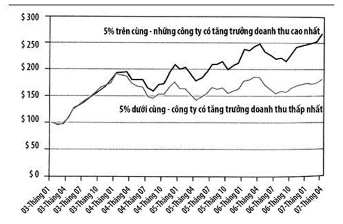
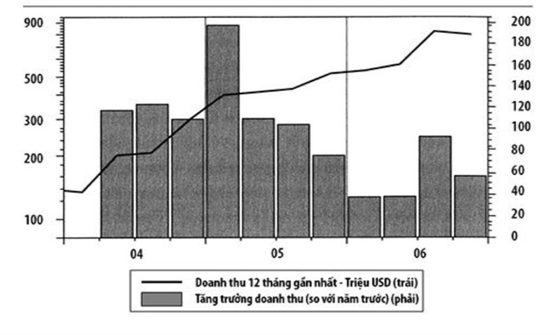

MỤC LỤC
4.2.
Bán
Để tăng trưởng, trước hết phải có người bán cái gì đó
BIẾN SỐ THỨ BA chỉ đơn giản là tăng trưởng doanh thu (sales growth). Một trong những yếu tố quan trọng đối với một cổ phiếu tăng trưởng là nó phải tăng trưởng thực sự. Điều này nghe có lẽ hơi ngớ ngẩn, nhưng sau một số xì-căng-đan về kế toán và sắp đặt doanh lợi trong sáu năm qua thì ý kiến này trở nên ít ngớ ngẩn hơn nhiều. Cách chắc chắn nhất và xác thực nhất để đo lường sự tăng trưởng thực sự là xác định xem năm nay công ty có bán được nhiều hơn không - và nhiều hơn bao nhiêu so với năm trước. Những đồng USD có thể bị tung hứng trong báo cáo thu nhập để xào xáo doanh lợi, nhưng rất khó để xào xáo con số doanh thu ở dòng trên cùng của báo cáo. Tăng trưởng doanh thu là một phần rất quan trọng trong mô hình chọn lựa cổ phiếu của chúng tôi, và chúng tôi luôn tìm kiếm những mức gia tăng doanh thu thật lớn.
Chúng tôi thường xuyên thử nghiệm và theo dõi từng biến số được dùng trong mô hình lựa chọn cổ phiếu, và liên tục thấy rằng tăng trưởng doanh thu là một trong những biến số mạnh nhất trong mô hình của mình. Chúng tôi đã phát hiện ra không có sự tăng trưởng doanh thu nhanh chóng từ quý này sang quý khác, từ năm này sang năm khác thì công ty hầu như không thể đạt được loại kết quả mà chúng tôi tìm kiếm. Nhìn vào Hình 4.3 (Những cổ phiếu tăng trưởng doanh thu cao đem lại doanh lợi hơn) để thấy rằng những công ty có tốc độ tăng trưởng doanh thu cao làm tốt hơn bao nhiêu so với những công ty có mức gia tăng doanh thu kém ngoạn mục hơn.

Hình 4.3. Những cổ phiếu tăng trưởng doanh thu cao đem lại doanh lợi
hơn
Về cơ bản có hai cách để một công ty đạt được sự tăng trưởng nhanh hơn. Cách thứ nhất dành cho công ty nào có thứ sản phẩm hay dịch vụ thực sự rất được ưa chuộng và có mức cầu luôn nhiều hơn so với mức công ty bán ra mỗi quý. Đây là trường hợp của một trong những cổ phiếu thắng lớn nhất của chúng tôi trong những năm qua, với những công ty như Chicago Mercantile Exchange và Precision Castparts. Trong trường hợp Chicago Mercantile Exchange, một trong những sàn giao dịch tương lai hàng đầu, đã tăng doanh thu từ khoảng 500 triệu lên hơn 1 tỷ chỉ trong vòng ba năm ngắn ngủi, khi các thị trường tiền tệ và vốn sở hữu bùng nổ. Precision Castparts có doanh thu tăng gần gấp ba sau hai năm khi cầu về kim loại công nghệ cao dùng để chế tạo máy bay bùng nổ từ nhu cầu căng thẳng trong ngành hàng không. Chính kiểu tăng trưởng doanh thu khó tin đó là cái kích thích những lần tăng giá ngoạn mục trong cùng thời gian này. Bất kỳ lúc nào hễ một công ty có doanh thu đang tăng trưởng 50 hay 100% một năm, thì những điều tốt lành chắc chắn sẽ diễn ra với giá cổ phiếu của công ty đó. First Marblehead là một ví dụ tiêu biểu khác về những gì xảy ra khi nhu cầu về một thứ sản phẩm cất cánh. Vì chi phí giáo dục liên tục gia tăng nên First Marblehead có thể tiến hành các khoản vay nợ và bán lấy tiền mặt để giúp nhiều người hơn trong việc tài trợ cho giáo dục cao đẳng. Như bạn có thể thấy trong hình 4.4 (Tăng trưởng doanh thu của First Marblehead), khi doanh số của First Marblehead bùng nổ thì giá cổ phiếu của họ cũng vậy, tăng 270% từ năm 2004 đến năm 2006.
Nguyên nhân quan trọng thứ hai của sự gia tăng doanh thu nhanh chóng xuất hiện ở những công ty nào mà sự mất cân bằng cung-cầu tạo ra sự tăng giá vững chắc. Nói cách khác, giá cả và nhu cầu tăng nhưng chi phí kinh doanh không tăng quá nhiều. Chính sự gia tăng nhanh chóng chi phí năng lượng đã cho phép doanh số của Conoco Phillips tăng từ 90 tỷ lên 185 tỷ trong vòng chưa đầy ba năm. Kiểu gia tăng doanh thu nhanh chóng này đã đẩy giá cổ phần từ 25 USD (năm 2003) lên đến hơn 70 USD chỉ trong ba năm. Imperial Oil, công ty vẫn còn bán hàng dưới nhãn hiệu Esso cũ ở Hoa kỳ, chứng kiến doanh thu của mình tăng từ 10 tỷ lên 24 tỷ trong cùng khoảng thời gian này. Cổ phiếu của nó thậm chí còn tăng trưởng tốt hơn, từ 8 USD lên 38 USD một cổ phần vào cuối năm 2006.

Hình 4.4. Tăng trưởng doanh thu của First Marblehead
Mặc dù tôi chủ yếu là người lựa chọn cổ phiếu từ dưới lên, nhưng tôi thường thấy rằng nhu cầu gia tăng về một thứ sản phẩm hay dịch vụ đặc biệt nào đó có thể dẫn đến việc nhiều công ty trong ngành cùng xuất hiện trong danh sách mua vào của chúng tôi. Nói cách khác, cả cái ngành đó được hưởng lợi từ sự tăng trưởng doanh thu mạnh mẽ. Khi tiền bắt đầu chảy từ thị trường chứng khoán vào các nhà băng sau vụ lò luyện đan Internet, các nhà băng phải làm cái gì đó với cả đống tiền mặt hay ho này. Và họ đã làm cái điều mà các nhà băng vẫn làm: Họ cho vay. Tất cả chỗ tiền có được đó bắt đầu chảy vào bất động sản như một nguồn cung tiền mặt khổng lồ với lãi suất thấp, làm cho rất nhiều người có thể mua ngôi nhà đầu tiên (hoặc thứ hai) cho mình. Tất cả những người mua mới này đã làm nên một đợt bùng nổ bất động sản. Tình huống này tạo ra sự tăng trưởng doanh thu khổng lồ cho những công ty như Lennar Corporation xây dựng nhà, và Countrywide Financial chuyên cho vay cầm cố nhà cửa. Cả hai cổ phiếu này đều tăng giá gấp đôi khi tiền chuyển vào thị trường bất động sản từ năm 2003 đến 2005!
Doanh số tăng gia tốc là dấu hiệu cầu chứng của hầu hết mọi cổ phiếu thắng lớn mà tôi từng có được trong sự nghiệp của mình. Những công ty cho thấy có sự tăng trưởng doanh thu kéo dài sẽ làm ra những kết quả không phụ thuộc vào thị trường hay nền kinh tế nói chung. Chúng ở trong cái thế giới tăng giá nhỏ bé của chính chúng, đó chính là cái chúng tôi tìm kiếm.
Doanh thu tăng trưởng chậm chạp là một trong những cách nhanh nhất để bị gạt ra khỏi danh mục đầu tư của chúng tôi. Có những thời kỳ khi ngay cả những công ty lớn cũng sẽ thấy khó mà duy trì được sự tăng trưởng doanh thu. Thậm chí họ có thể tiếp tục đi lên mà không cần phải thành công. Intel và Microsoft là những ví dụ tiêu biểu của sự tăng trưởng dang dở bởi vì thành công. Cả hai công ty này đều từng là những doanh nghiệp tăng trưởng nhanh đến mức tạo nên cuộc cách mạng hóa hoàn toàn thế giới máy vi tính và làm cho các cá nhân có thể có được năng lực tính toán khổng lồ trên quy mô trước đây chưa từng có. Tuy vậy, họ tăng trưởng đến mức thống trị hoàn toàn ngành kinh doanh này, đến nỗi thực sự chẳng có mấy người và doanh nghiệp không mua sản phẩm của họ. Mọi người đều có Windows và Intel Inside. Cả hai hãng giờ đây phải tăng trưởng thông qua việc việc nâng cấp cùng những adds-on cho sản phẩm và có vẻ sẽ không bao giờ thấy được kiểu phát đạt rầm rộ mà họ từng được hưởng nữa. Chúng tôi theo dõi rất cẩn thận để tìm sự suy giảm tăng trưởng doanh thu. Bởi nó là một biến số rất mạnh trong việc lựa chọn cổ phiếu thành công của chúng tôi. Doanh thu tăng chậm lại là dấu hiệu thực sự nguy hiểm đối với tôi.